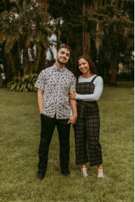
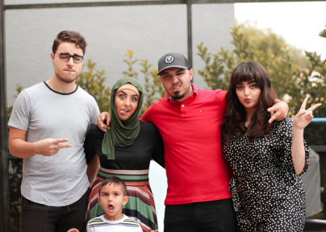
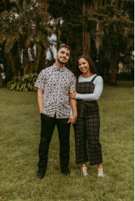
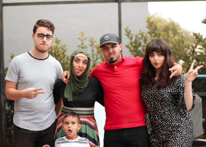

I'm a UX/UI designer that loves to learn about all things creative. A good way to get to know me is by understanding the things I am most passionate about!
It has always been my favorite way to relax and meet new people. Some of my closest friends have come from gaming and I have managed to meet several in person. It is an awesome feeling! Some favorites: Horizon Zero Dawn, New World, Valheim, Ratchet & Clank.
For me it all started around my very early teen years when my father had bought a DSLR camera that soon became mine to use. I started taking photographs in my backyard of trees, plants, flowers, frogs. Photography was an amazing concept to me, the ability to frame and capture a moment in time that influenced emotion in myself and others. It quickly became a hobby that filled me with a yearning to become the best at what I did.
I believe that it is so important to know about the injustices in our communites and across the world. It makes you sensitive to the diverse lives of others and helps you understand how to be a better friend, coworker, sibling, parent, etc. That is why I am passionate about helping serve the greater good in all aspects of my work.
Supportive text. Yes I explain dis and dat wooooooooo. Very nice very nice. Need to make this line longer yes very nice.
View Case Study
Supportive text. Yes I explain dis and dat wooooooooo. Very nice very nice. Need to make this line longer yes very nice.